Community Mural
Art for All is Fairfield Primary School's annual art exhibition and fundraising weekend. It brings together a curated gallery of professional artists, a shop of artisan goods, and a Children's Gallery showing work from every student.
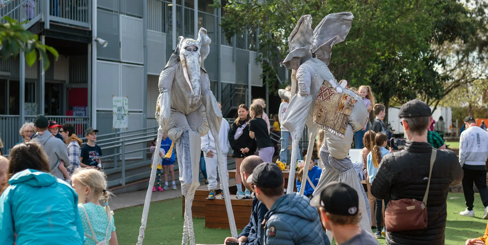
Alongside that sits the community art project, something open-ended that anyone can contribute to. I volunteered to run it in 2024.
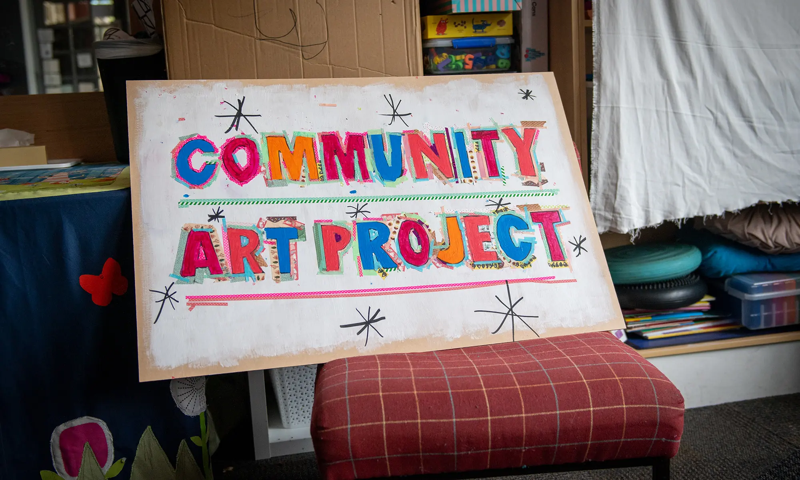
The only loose direction was a connection to Leonardo da Vinci. I dug into some books on his sketches and narrowed in on his focus on the human form.
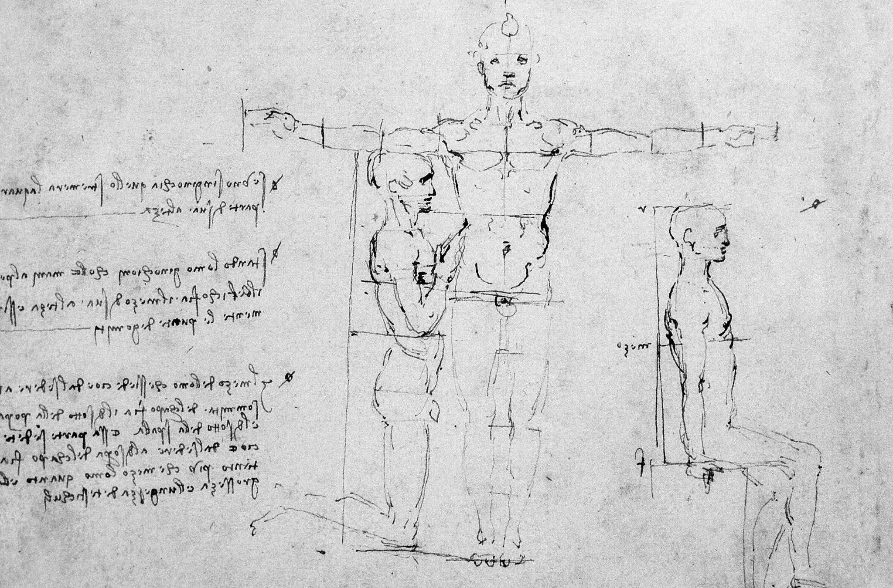
A sketch from a Davinci exhibition book.
I thought of not just one human form, but many forms overlapping. They could create a tapestry of shapes that took on a life of their own, almost like a Fernand Leger painting.
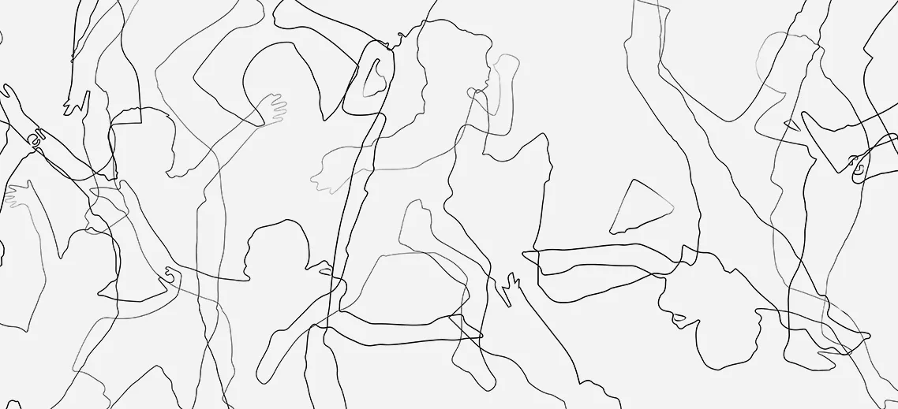
An initial sketch of silhouettes overlapping.
The approach was physical. Large sheets of canvas laid out on the floor, kids tracing themselves or each other. Arms out, legs bent, awkward poses, overlapping figures. Very quickly it stopped being about individuals and turned into a field of shapes. Anyone could take part in three ways: be traced, do the tracing, or paint the result.
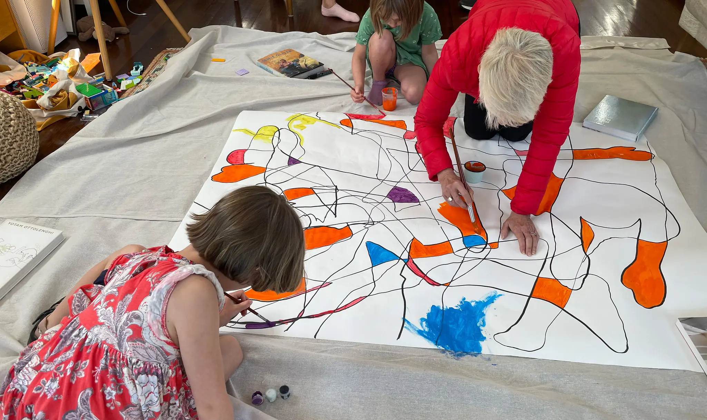
Prototyping the idea in the real with family.
I mocked up overlapping silhouettes to get a feel for how the composition might build, then tested it at home at a smaller scale. The overlaps held together and created enough ambiguity to make it interesting.
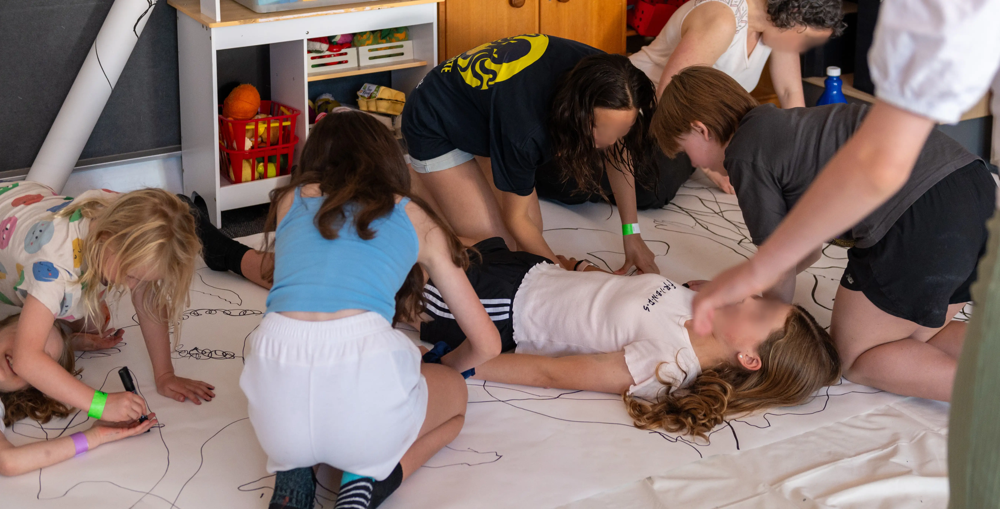
Kids creating silhouettes with friends.
On the day we rolled out two canvases, each around ten metres long. The space filled quickly. Kids queued to be traced, then drifted into painting. Parents joined in. It became constant movement.
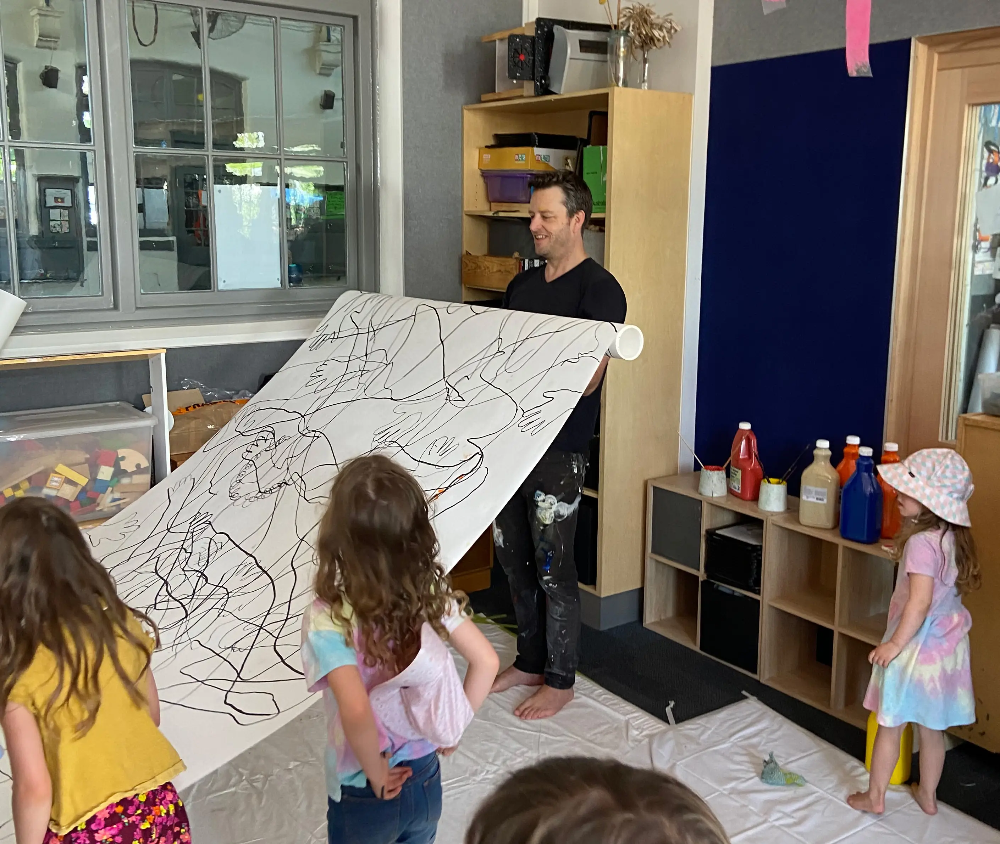
Rolling up the first canvas.
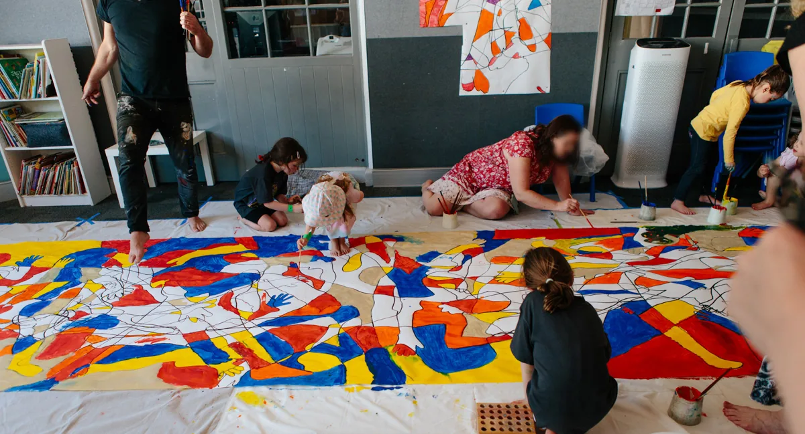
Painting one of the canvases.
The final work is messy, layered, and full of collisions. You can still find fragments of bodies if you look closely, but mostly it reads as a shifting field of colour and line.
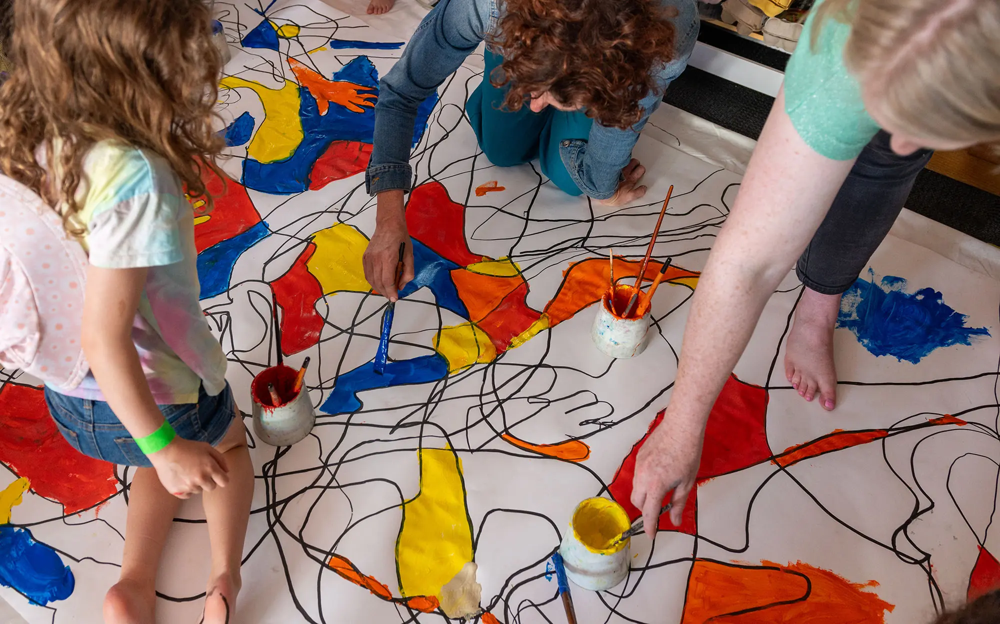
Collaboration in real time.
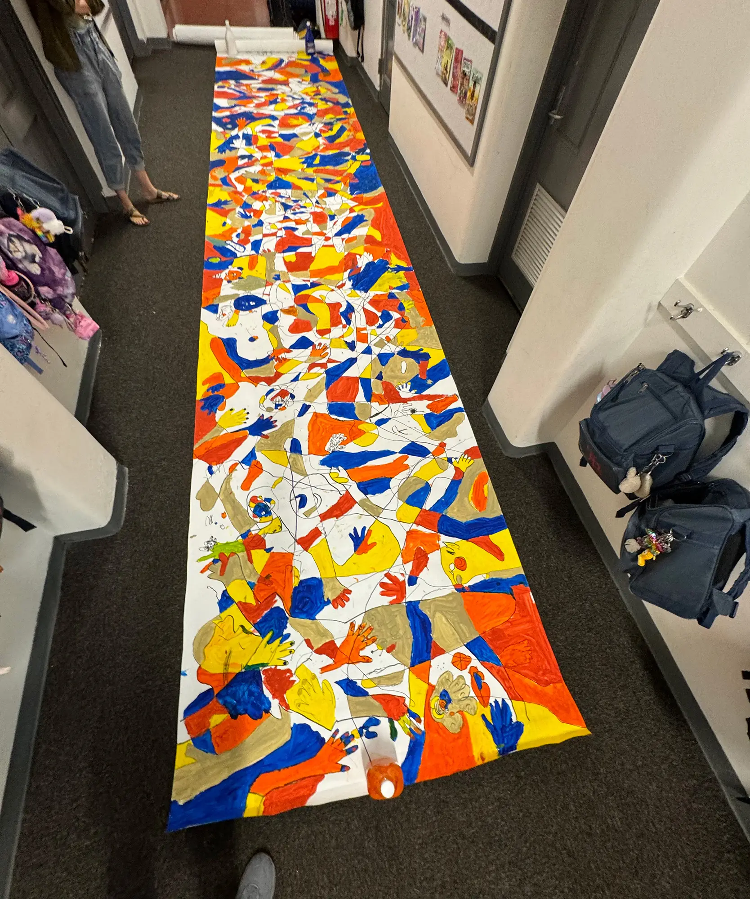
One of the two finished canvases.
We installed the panels along the walls of the school library, above the shelves. It runs the length of the room now. A record of a lot of people passing through and leaving something behind.
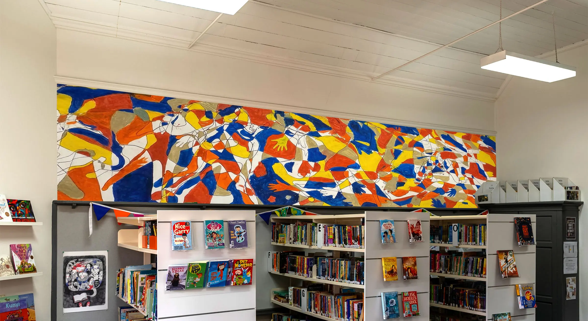
End result mounted in the school library.